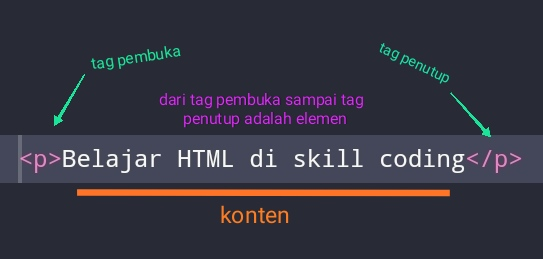

Skill Coding
#Belajar HTML
Jika anda ingin menjadi web developer handal, Anda wajib banget paham dengan pengertian HTML. Soalnya, HTML adalah satu komponen website yang sangat penting.
Nah, jadi pengertian dari HTML (Hypertext Markup Language) adalah suatu bahasa yang menggunakan tanda-tanda tertentu yaitu biasa disebut dengan (tag) untuk menyatakan kode-kode yang harus diterjemahkan oleh browser agar halaman tersebut dapat ditampilkan dengan benar.
Secara umum, fungsi HTML adalah untuk mengelola serangkaian data dan informasi sehingga suatu dokumen dapat diakses dan ditampilkan di Internet melalui layanan web.
Fungsi HTML yang lebih spesifik adalah sebagai berikut:
Setelah mengetahui pengertian dari HTML, sekarang Anda perlu tahu komponen-komponen yang terdapat pada HTML.
Secara umum HTML terdiri dari Tag, Elemen, dan Atribut.
Berikut ini penjelasannya:
Tag adalah awalan dan akhiran dalam perintah HTML yang akan dibaca oleh web broswer. Tag dibuat dengan menggunakan kurung siku <...>, dimana di dalamnya berisi nama tag.
Setiap tag memiliki fungsi perintah yang berbeda-beda. Mulai dari membuat judul, paragraf, heading, cetak miring, italic, dan lainnya.
Misalnya: <bold>. Tag tersebut akan meminta browsed untuk menampilkan teks dengan format tebal.
Selain itu, tag ditulis secafa berpasangan, yaitu tag pembuka dan tag penutup. Pada tag penutup ditambahkan garis miring (/) di depan nama tag.
Tag HTML sendiri saat ini sudah berjumlah lebih dari 250 tag. Banyak juga, ya. Namun, Anda tak perlu menghafal semua tag yang ada. Anda hanya perlu mengingat beberapa tag dasar berikut ini:
| Tag | Fungsi Tag |
|---|---|
| <html> | Untuk memulai halaman HTML yang mencakup semua konten dan elemen. |
| <head> | Untuk membuat halaman HTML yang mencakup tampilan deskripsi di hasil pencarian Google, style konten (CSS), dan lainnya. |
| <title> | Untuk membuat judul website. |
| <body> | Untuk membuat bagian isi website. |
| <h1> sampai <h6> | Untuk membuat heading pada bagian artikel (h1 terbesar, h6 terkecil). |
| <p> | Untuk membuat paragraf. |
| <!-- --> | Untuk membuat komentar. |
Elemen merupakan komponen HTML yang berupa keseluruhan kode dari tag pembuka hingga tag penutup. Elemen terdiri dari teks dan simbol yang berupa tag pembuka, isi tag atau konten, dan tag penutup.
Contohnya: <i>Belajar HTML</i>
Pada sebuah elemen juga bisa berisi elemen lainnya. Jadi elemen tersebut tak hanya berisi satu tag saja, tetapi banyak tag. Elemen itu disebut nested elements. Sebagai contoh, simak kode berikut:
<html>
<body>
<h2>judul heading</h2>
<p>paragraf pertama</p>
<body>
<html>
Jika diperhatikan element HTML tersebut, dari tag pembuka <html> lalu tag <body> yang berisi elemen tag heading dan elemen tag paragraf.
Atribut adalah informasi atau perintah tambahan yang berada dalam elemen. Atribut ini berfungsi sebagai penjelas perintah tag pada elemen.
Misalnya, <img src="gambar.jpg" alt="komputer">.
Tag <img> memiliki atribut khusus yaitu (scr) dan (alt) yang artinya browser harus menampilkan gambar.jpg dengan alt text “komputer”.
Dari contoh di atas, dapat diketahui juga kalau jumlah atribut dalam sebuah tag bisa lebih dari satu. Meski demikian, tidak semua atribut bisa digunakan dalam sebuah tag. Berikut ini jenis atribut khusus beberapa tag:
| Atribut | Dapat digunakan pada Tag |
|---|---|
| src | <img>, <embed>, <audio>, <iframe> |
| href | <a>, <link> |
| action | <form> |
| autoplay | <audio>, <video> |
Selain atribut khusus, ada beberapa atribut yang digunakan untuk menentukan aksi pada dilakukan jika terjadi sesuatu pada elemen. Misalnya , (onload) saat loading selesai, (onoffline) saat tiba-tiba offline, (onresize) ukuran jendela. Atribut tersebut disebut dengan atribut event.